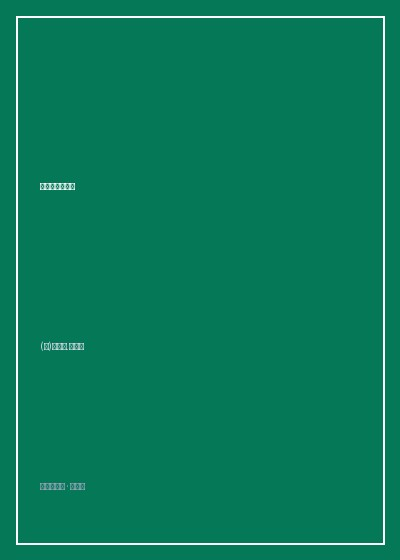

《随机致富的傻瓜》

总体观点
真实世界远比人类大脑想象的更加充满了纯粹的随机性与运气。人们在面对成功时，习惯性地将纯粹由随机概率赋予的丰厚收益，归功于当事人的绝顶聪明、前瞻远见或勤奋过人；殊不知，在数以万计的竞争者中，哪怕是一群只会乱抛硬币的猴子，在纯统计学意义上也必然会有一只‘连续抛出二十次正面’并被华尔街奉为绝世投资股神。
引入‘替代历史’（Alternative Histories）的思辨透镜。评价一个人的决策质量或财富成色，不能仅仅看他最终展现出来的单一现实结局，而必须考量所有原本可能发生但碰巧没有发生的大量潜在平行路径。如果一个人的财富是建立在玩俄罗斯轮盘赌并侥幸扣动了没有装子弹的弹巢上，这种‘致命脆弱的财富’在长期均值回归中迟早会被随机性彻底消灭吞噬。
向蒙田、波普尔与古希腊怀疑论者致敬。塔勒布倡导在傲慢的金融世界中保持智性谦卑，坚守休谟的归纳法怀疑论。不要把‘未曾发生过灾难’误当成‘灾难绝不会发生’，唯有时刻警惕黑天鹅突袭、构筑非对称收益防护墙，才能避免沦为在感恩节前夕被幸福养肥后割喉的倒霉火鸡。
核心观点
-
1. 俄罗斯轮盘赌的替代历史
一把左轮手枪装有一颗子弹，开枪赢一百万美元。活下来的人虽然名利双收住进豪宅，但其财富的本质极其危险肮脏，因为在六分之五的可能历史中他是富翁，而在六分之一的历史中他是一具脑浆涂地的死尸。
通过加十倍杠杆做空波动率每年稳赚数千万奖金的债券交易员，表面上风光无限胜过老实牙医，实则每天都在扣动俄罗斯轮盘赌的扳机，一次黑天鹅爆仓便足以粉身碎骨。 -
2. 幸存者偏差与股神的神话
如果我们让一万个人每天猜一支股票涨跌，即使全员瞎猜，根据二项式定理，十天后也必然会剩下大约十个人连续十天全部猜中。这十个人会被媒体捧为未卜先知的顶级大师，却没有人会去统计那一万名早已被淘汰的沉默垫脚石。
书店畅销榜上充斥着成功企业家的自传秘诀，但绝大多数所谓的成功法则，破产者当年在倒闭前夕同样奉为圭臬，大众只是选择性凝视了聚光灯下的幸存者。 -
3. 火鸡问题与归纳法的致命陷阱
火鸡在农场度过了一千天，农场主每天准时喂食玉米。火鸡的统计学模型显示‘人类是全心全意爱我的友善物种’，且这一结论的置信度在第九百九十九天达到历史最高峰——直到感恩节前夜农场主提着屠刀走进鸡舍。
美国长期资本管理公司（LTCM）汇聚了两位诺贝尔经济学奖得主与最顶尖数学模型，笃信根据数百年历史数据回测俄债违约概率趋近于零，结果在1998年俄罗斯突发主权债务违约风暴中四个月巨亏数十亿美元宣告破产。 -
4. 牙医与投机客的生活哲学
一个老老实实补牙拔牙赚取稳定咨询费的牙医，其财富积累具有极高的确定性与低波动性；而靠买卖垃圾债突然暴富的隔壁邻居虽然看似风光，但其财富毫无抵御未知极端波动的韧性，随时可能在一夜之间化为乌有。
对比稳健行医三十年的老牙医与隔几年便经历一次暴富与破产轮回的华尔街投机客，展现了可持续确定性生活节奏对维系内心安宁的至高哲学价值。 -
5. 斯多葛主义：在随机命运中守住灵魂尊严
面对暴虐不可控的命运女神，真正的英雄既不盲目狂妄也不怨天尤人。学会在成功时淡泊自知这只是运气的垂青，在突发灾难清零时依然保持高贵从容的风骨与道德操守，是人类对抗无常宇宙的唯一崇高姿态。
引用古罗马哲学家塞涅卡的箴言：将身外之物全当成命运女神暂时借给我们的寄存品，随时做好两手空空归还的心理准备，便无人能够剥夺内心的自由。
全书结构
-
第一部分 索伦的警告：替代历史的阴影
引入古希腊梭伦对吕底亚国王克罗苏斯‘未到终局休言幸福’的传世名言，确立替代历史与俄罗斯轮盘赌的核心思维模型。
通过对比虚拟人物牙医约翰与杠杆交易员尼禄二十年间的命运反差，揭示纸面繁华与底层抗风险脆弱性的残酷鸿沟。 -
第二部分 猴子打字机：幸存者偏差的狂欢
详尽拆解统计学中的幸存者偏倚、数据挖掘陷阱、回测过拟合与非线性分布，剖析华尔街如何通过批量筛选制造明星基金经理神话。
展示让一千只猴子在打字机前胡乱敲打，必定有一只碰巧敲出莎士比亚十四行诗的第一节，揭露量化金融盲目拟合历史噪音的荒唐破产。 -
第三部分 耳中的蜡：对抗人性的随机偏见
探讨现代神经认知科学如何证实人类大脑极度厌恶随机性、天生具有‘把杂乱噪音编织成自洽因果故事’的叙事谬误本能。
以荷马史诗中奥德修斯命令水手用蜂蜡塞住耳朵并把自己绑在桅杆上航经塞壬女妖海域为例，传授通过强制隔离外界每日股市噪音保持理性的纪律法则。 -
第四部分 结语：在轮盘赌世界中的优雅漫步
全书哲学升华，向蒙田与卡尔·波普尔致敬，提炼一套在充满不确定性与黑天鹅的动荡世界中安身立命的斯多葛生存美学。
分享作者作为资深期权交易员的亲身保命原则：只买入极度廉价的虚值看跌期权防范黑天鹅，坚决不通过暴露尾部无限风险去赚取蝇头小利。